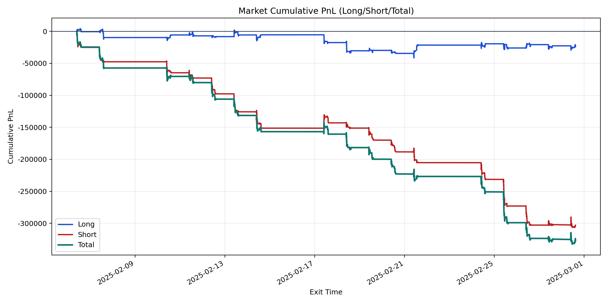
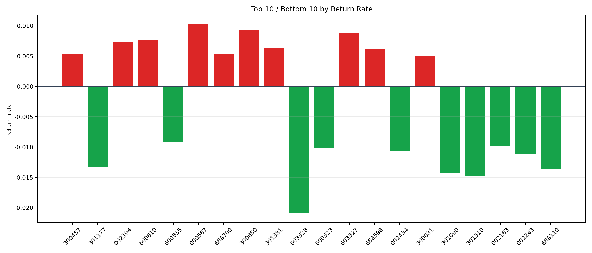

| repo_root | /home/haoranyou/data/output/dynamic_AUM_TAKER_index1000 |
|---|---|
| period_months | 1 |
| period_label | 2025-02-06_to_2025-02-28 |
| start_time | 2025-02-06 09:46:37 |
| end_time | 2025-02-28 14:45:12 |
| n_trades | 18979 |
| n_symbols | 285 |
| total_pnl | -327135.01330000133 |
| long_total_pnl | -24006.92769999778 |
| short_total_pnl | -303128.0856000036 |
| total_entry_notional | 351706569.0 |
| long_entry_notional | 137601179.0 |
| short_entry_notional | 214105390.0 |
| total_return_rate | -0.0009301362048202214 |
| long_return_rate | -0.00017446745641618217 |
| short_return_rate | -0.0014157891382370318 |
| top_symbols_by_return | ["000567", "300850", "603327", "600810", "002194", "301381", "688598", "688700", "300457", "300031"] |
| bottom_symbols_by_return | ["603328", "301510", "301090", "688110", "301177", "002243", "002434", "600323", "002163", "600835"] |

